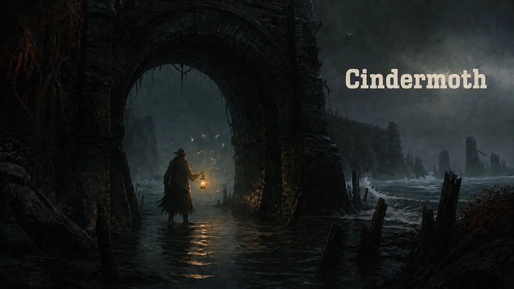

Everything here is cleared for use in reviews, previews, videos and streams. No embargo, no approval needed, and no watermark on the screenshots.
Review keys for Steam and Switch usually go out within a working day. Tell us your outlet and your platform.
Request a review keyYou are free to monetise videos of Cindermoth on any platform, indefinitely. That includes let’s plays, full playthroughs, reviews and ad-supported streams.
We will never issue a content claim or a takedown against a video of our own game. You do not need to ask us first, and you do not need to credit us, though we always appreciate it.
Cleared for copy and paste. Edit freely — you do not need to quote us verbatim.
Cindermoth is a hand-painted metroidvania about a lamplighter who cannot go home. No combat, no death, and a map you have to draw yourself.
Cindermoth is a hand-painted metroidvania about a lamplighter walking home across a drowned coast. There is no combat and nothing can kill you. What pressure there is comes from your lantern, which burns down as you walk, and from the map, which the game never fills in for you. One very large world, and a light you have to spend carefully.
Cindermoth is a hand-painted metroidvania about a lamplighter walking home across a drowned coast. Every frame is painted in gouache and scanned, and the whole world is lit by the one lantern you carry. There is no combat and nothing can kill you. The pressure is elsewhere: the lantern burns down as you walk, the weather closes routes without warning, and the map is blank until you draw it yourself, by hand, with the marks you choose. Saltgate, the Canopy and the Ninefold Light are reachable in any order. Finishing is not the same as seeing it all.

key-art-logo.png · WITH TITLE key-art-clean.png · NO TITLE
key-art-clean.png · NO TITLE
“The rare metroidvania that trusts you to just look at it.”
EUROGAMER
“I finished it in two sittings and immediately started marking a second map.”
ROCK PAPER SHOTGUN
“Removing combat did not make it gentle. It made every wrong turn cost something.”
EDGE
Ninefold Lantern is two people in a rented room above a print shop in Bristol. It was founded by Mira Halloway and Tomas Vekk after years between them on other studios’ platformers.
Cindermoth is their first commercial release. It was funded by a UK Games Fund award and Mira’s freelance illustration work. There is no publisher and no external investment.
© 2026 Ninefold Lantern Ltd. Cindermoth and the moth mark are trademarks of Ninefold Lantern Ltd.